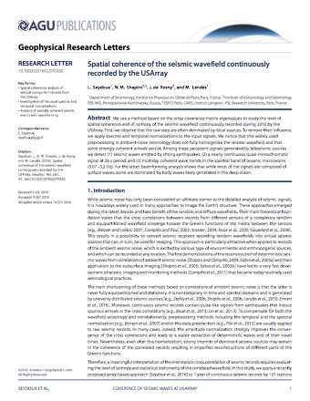
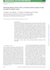
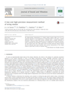
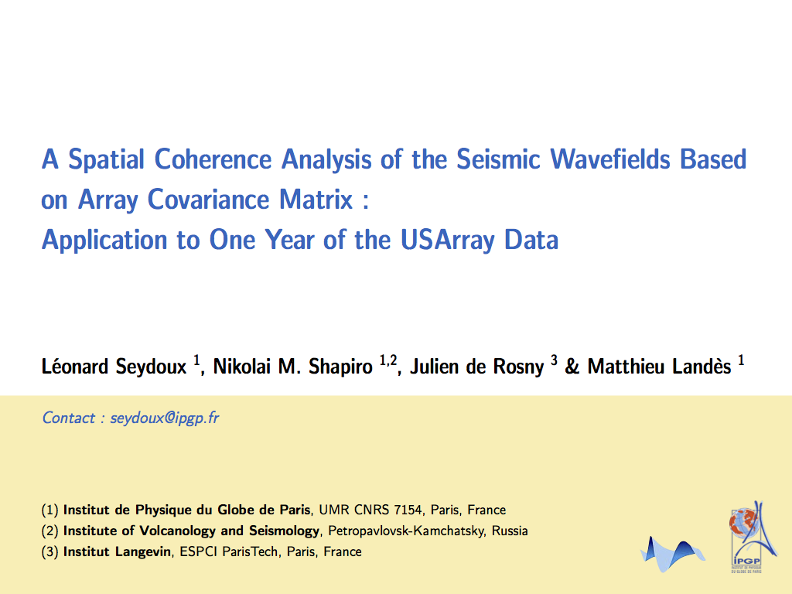
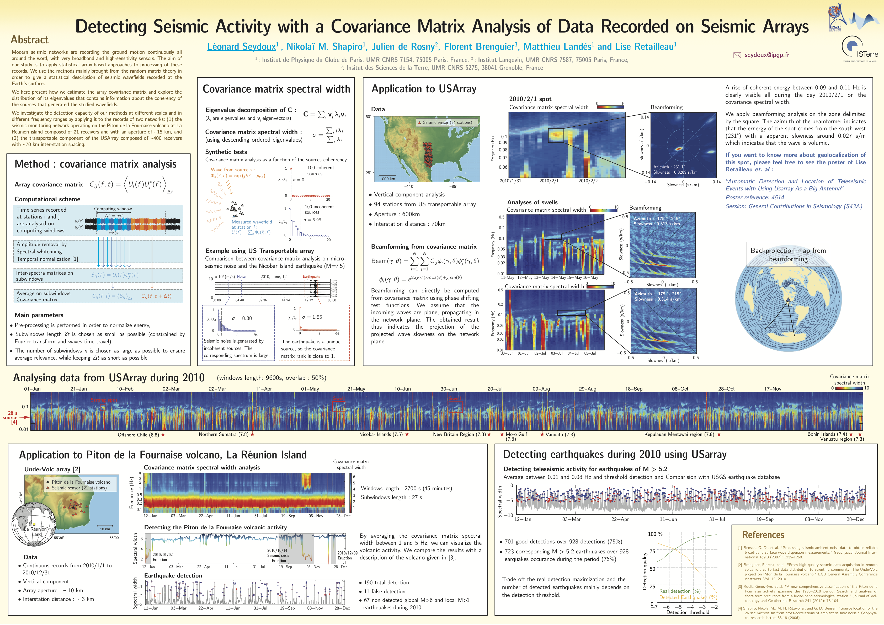

Count
3
3
Conference proceedings (1 talk + 1 poster + 1 submitted abstract)
6
Other presentations (3 invited seminars + 3 summer schools and workshops)
This publication list is also available on other platforms
Curriculum Vitae (pdf) Google Scholar ResearchGatePeer-reviewed publications

3. Seydoux, L., Shapiro, N. M., de Rosny, J., & Landes, M. Spatial coherence of the seismic wavefield continuously recorded by the USArray. Geophysical Research Letters, 43, 9644--9652.
doi

2. Seydoux, L., Shapiro, N. M., de Rosny, J., Brenguier, F., & Landes, M. (2016). Detecting seismic activity with a covariance matrix analysis of data recorded on seismic arrays. Geophysical Journal International, 204(3), 1430–1442.
doi

1. Le Carrou, J. L., Chadefaux, D., Seydoux, L., & Fabre, B. (2014). A low-cost high-precision measurement method of string motion. Journal of Sound and Vibrations.
doi
Conference Proceedings
-
3. Seydoux, L., de Rosny, J., & Shapiro, N. M. (2016, December). Pre-Processing Noise Cross-Correlations with Equalizing the Network Covariance Matrix Eigen-Spectrum. In 2016 AGU Fall Meeting (poster).

2. Seydoux, L., Shapiro, N. M., de Rosny, J., & Landes, M. (2015, December). A Spatial Coherence Analysis of Seismic Wavefields Based on Array Covariance Matrix: Application to One Year of the USArray Data. In 2015 AGU Fall Meeting (talk).
abstract
-

1. Seydoux, L., Shapiro, N., de Rosny, J., & Brenguier, F. (2014, December). Detecting Seismic Activity with a Covariance Matrix Analysis of Data Recorded on Seismic Arrays. In AGU Fall Meeting Abstracts (Vol. 1, p. 4407) (poster).
abstract
Other
-
7. Array-based analysis of ambient seismic noise. Invited seminar Institut des Sciences de la Terre, Université de Grenoble, France.
abstract -
6. Array-based analysis of ambient seismic noise. Invited seminar at the Laboratory of Planetology and Geodynamics, University of Nantes, France.
abstract -
5. Seydoux, L., Shapiro, N. M., de Rosny, J., Brenguier, F., & Landes, M. (2015). A Spatial Coherence Analysis of Seismic Wavefields Based on Array Covariance Matrix - Application to One Year of the USArray Data. (talk). In the 2016 IPGP PhD meeting.
abstract -
4. Seismic detection from array covariance matrix. Seminar at Institut de Physique du Globe, Paris, France.
-
3. Seismic detection from array covariance matrix. Invited seminar at the Laboratoire d'Imageire Biomédicale, University Pierre & Marie Curie, Paris, France
abstract2. Seydoux, L., Shapiro, N. M., de Rosny, J., Brenguier, F., & Landes, M. (2015). Detecting seismic activity with a covariance matrix analysis of data recorded on seismic arrays. (poster). In the 2015 IPGP PhD meeting.
abstract1. Seydoux, L., Shapiro, N. M., de Rosny, J., Brenguier, F., & Landes, M. (2015). Detecting seismic activity with a covariance matrix analysis of data recorded on seismic arrays. (poster). In Ambient Noise Imaging and Monitoring Workshop, Cargese 2015.